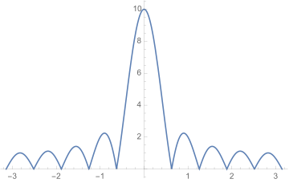
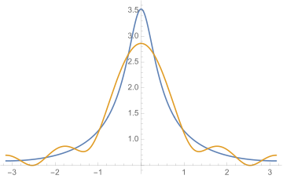
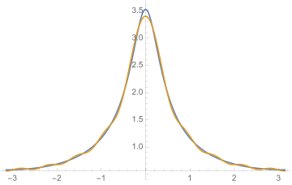
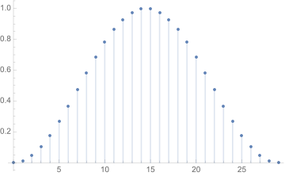
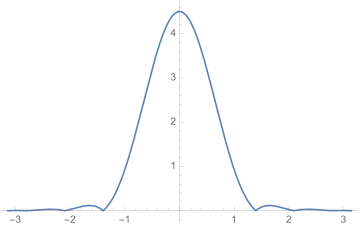
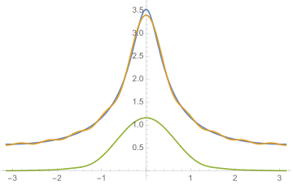

Lecture 6
离散时间序列
单位采样序列
单位阶跃序列
矩形序列
三种序列之间的关系：
实指数序列
离散时间傅立叶变换
经过推导，可以使用离散的采样值序列计算理想采样信号的频谱密度：
其逆变换为：
频率归一化
将频率和时间归一化处理。我们令原来的一个采样周期\(T_s\)为单位1的逻辑时间或数字时间，因此原来模拟时间的采样值序列\(x(nT_s)\)变为数字时间上的序列\(x(n)\)。
数字频率\(\Omega\)与模拟频率\(\omega\)之间的关系则为：\( \Omega = \omega T_s = 2\pi\frac{\omega}{\omega_s} \)
采用归一化后的离散时间傅立叶变换则为：
这样的优点是在处理时可以无需关心真正的采样间隔，因为频谱周期始终是\(2\pi\)，而且对于计算机来说，可以使其只关心数值表示在保证正确性的前提下提高算法的适用性。
常用信号的DTFT
DTFT的性质
- 线性
- 周期性：\(X(\Omega)=X(\Omega+2\pi)\)
- 平移性质
- 时域平移：\(\mathbf{DTFT}[x(n-n_0)]=e^{-j\Omega n_0}X(\Omega)\)
- 频域平移：\(\mathbf{DTFT}[e^{j\Omega_0 n}x(n)]=X(\Omega-\Omega_0)\)
- 反褶：\( \mathbf{DTFT}[x(-n)] = X(-\Omega) \)
- 共轭：\( \mathbf{DTFT}[x^*(n)] = X^*(-\Omega) \)
- 时域拓展：\( \mathbf{DTFT}[x_{(a)}(n)] = X(a\Omega) \)
- 时域差分：\( \mathbf{DTFT}[x(n)-x(n-1)] = (1-e^{-j\Omega})X(\Omega) \)
- 频域微分：\( \mathbf{DTFT}[nx(n)] = j[\frac{d}{d\Omega}X(\Omega)] \)
- 卷积性质
- 时域卷积：\( \mathbf{DTFT}[x_1(n)\ast x_2(n)] = X_1(\Omega)\cdot X_2(\Omega) \)
- 频域卷积：\( \mathbf{DTFT}[x_1(n)\cdot x_2(n)] = \frac{1}{2\pi} X_1(\Omega)\otimes X_2(\Omega) \)
- 其中\(\otimes\)代表圆周卷积，意为将卷积限制在周期函数的一个周期内：\( X_1(\Omega)\otimes X_2(\Omega) = \int_{-\pi}^{\pi}X_1(\Omega')X_2(\Omega-\Omega')d\Omega' \)
- 帕斯瓦尔定理：\( \sum_{n=-\infty}^{\infty}|x(n)|^2 = \frac{1}{2\pi}\int_{-\pi}^{\pi}|X(\Omega)|^2d\Omega \)
有限长序列的DTFT
时域加矩形窗信号的DTFT
计算机无法处理无限长的时域信号，因此只能通过窗函数截取一段信号序列进行处理。最简单的窗函数就是矩形窗：
加窗后的信号变为：
根据卷积定理，加窗后的频谱为：
其中矩形窗的频谱容易计算：
其幅度频谱图形为(\(L=10\))：

其中：
- 最高点为\(W(0) = L\)
- 主瓣：
- 第一个过零区间\((-\frac{2\pi}{L}, \frac{2\pi}{L})\)
- 主瓣宽度：\(\Delta\Omega_W = \frac{2\pi}{L}\)
- 旁瓣：其他部分
加窗对序列频谱的影响
- \(L\)越大，主瓣宽度越小，频谱分辨率越高，分辨能力越强。
- 定义频谱分辨率为可以分辨的相距最近的谐波分量频率\(\Delta\Omega\geqslant\Delta\Omega_W=\frac{2\pi}{L}\)
- 不确定原理：加窗后可分辨的最小频率间隔由数据长度决定。
- 产生频谱泄漏现象，即频谱在真实频率周围存在大量杂散频率，且最大值也有一定下降。
下图演示了离散信号\(x(n)=e^{-\frac{1}{3}n}u(n)\)加窗与否的DTFT频谱图，其中的窗函数为长度为5的矩形窗：

可以看到，橙色的曲线描述的是加窗后的频谱，与原来的蓝色曲线频谱相比，最大值有所减少，而且也确实混入了一些局部极值，即泄漏的杂散频率。
如果要提高加窗后的频谱准确率，那么可以增大采样窗，减少主瓣宽度，也即提高频谱分辨率。如下面就是增大窗到长度为10时的频谱对比图：

我们也可以减小旁瓣，令要泄漏出去的频率快速衰减。这时我们就需要更换更加复杂的窗函数，常用的有汉宁窗和平顶窗。如汉宁窗的窗函数：
\(N=30\)时的图形为：

\(N=10\)频谱图为：

可以看到，与矩形窗相比，汉宁窗的旁瓣很小，有利于减小泄漏，但是主瓣则相对较大，频谱分辨率较低。
用\(N=10\)的汉宁窗处理上面所述的指数信号，与同样长度的矩形窗进行对比：
